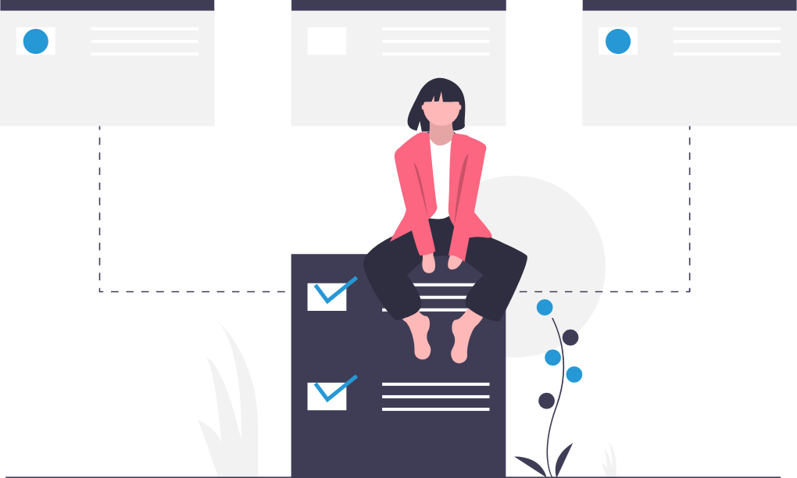

Experiment with different techniques during the first few weeks to find out what works best for you.
Keep your notes organised – if you can’t find them, there’s no point taking them! Use different notebooks for each module so that your notes do not get mixed up.
Read around topics – consult recommended texts for more detailed information. Don’t expect to get all of the required information during the lecture.
Be wary of taking too many notes. Try consolidating your notes into one document for revision purposes.
Use colour to draw attention to important details – buy plenty of coloured pens!
Read lecture outcomes in the module handbooks and any handouts before a lecture so that you have a good synopsis of what the lecture will cover.
Write notes on any PowerPoint handouts next to the appropriate slide.
Do not try to write everything that the lecturer is saying – note key points and items which are not on any lecture handouts. Use bullet points to note things down quickly.
Sometimes it is more productive to just listen during the lecture and then make notes later using Recap.
Useful Note Taking Software
Notion – helps to organise notes on PC/laptops.
OneNote – allows your notes to be organised and kept in one place. You can then use your stored notes to create flashcards for revision. You can also add any lecture PowePoint slides and add your own notes during the lecture.
Notability – allows simple note taking and PDF annotation.
Google Drive – to create folders of notes.

Referencing
Find your references during your planning rather than as you are doing the assignment.
Reference as you work – it will save you a lot of time!
Colour-code information according to the source – this is an easy way to keep track of where the information comes from. Create a research log.
Look at referencing style guides - check that your references are correct for your specified style of referencing.
Attend library organised session at the beginning of the year on how to reference – these are very useful!
Help with referencing is available from the library – use the resources available on the library website.
Help with referencing is also available from ASK.
Referencing Software
Cite Them Right – a resource to help you reference correctly and avoid plagiarism.
EndNote – a software tool for publishing and managing bibliographies, citations and references on Windows and Mackintosh desktop.
Cite This For Me – allows you to create citations, reference list and bibliographies using various referencing styles.
EasyBib - automatically cites books, journal articles and websites using various referencing styles.
Mendeley – a reference management tool and academic social network.
Zotero – helps you to collect, organise, cite and share research.
Exams and Revision
Revise throughout the term so that you are not overwhelmed during the exam period. Make sure you keep your notes and revision material up to date. Allocate time after lectures to make revision notes.
Make a revision timetable – make sure all your modules are covered and leave yourself plenty of time to re-read any necessary texts.
Read module handbooks so the learning objectives are familiar.
Base your revision materials around the learning objectives of each lecture.
Use Mind Maps to help you visually organise topics.
Prioritise topics that you are going to revise – study those that you do not understand first. If you are still struggling, you can then ask for further help and clarification from your lecturers.
Start any coursework promptly so that it maximises your time for revision as you get closer to the exams.
Use past exam papers if they are available and practise answering the questions.
Swap notes with other students on your course – there may be something that you have missed.
Focus on yourself and do not worry about what your friends have done or what they are doing during an exam.
Convert your notes into ‘Question & Answer’ revision cards or short summaries of each topic.
Figure out where you study best – i.e. the library, your bedroom, a home office, etc. Find the most comfortable and productive environment, somewhere where you will be able to concentrate and are not easily distracted or can procrastinate.
Set the mood to study – have a clean study space which includes all the things that you will need.
Schedule regular breaks in your revision timetable – see your friends, watch a film, etc.
Be kind to yourself – eat well, take regular exercise and have enough sleep.
Give yourself small rewards for achievable goals.
Useful Revision Software
Flashcard software – Anki, BrainScape and Quizlet are a great resource for creating flashcards. Create your own or share flashcards with your fellow students.
Kahoot - create quizzes to test yourself and your course mates.
Peerwise - create and review multiple choice questions.
YouTube – a useful tool to search for educational videos.
Recap - to go over any lecture materials you may have missed or are unsure about.
University Library
The University Library Service provides access to a wide range of resources, services and study spaces as well as professional expertise to help students to be successful in their studies and research.
Library Staff are available at Library Help desks to help students to find the information they need. Alternatively, students can also use the online Library Help service, 24 hours a day, 7 days a week, to access support, no matter where they are.
The libraries have a range of study and research spaces including group and individual study rooms, allowing students to study collaboratively or silently, depending on their preference or task.
The Philip Robinson Library also houses the Special Collections which are made up of rare and historic books, manuscripts, maps and illustrations.
Useful University Links
ASK - ASK has advice on developing your academic skills and information about where you can go for support.
Language Resource Centre - The Centre supports independent language learning and tandem learning. It offers free language learning facilities to all members of the University.
Writing Development Centre - The Writing Development Centre offers advice and guidance on writing for assessment and other study skills. Their team of learning developers work with students across all subjects.
Subject Guides - The Library Subject Guides draw together the best resources and tailored help for your subject area. Resource guides highlight the range of resources available to help students access specialist information types, such as newspapers, company information, market research and systematic reviews.